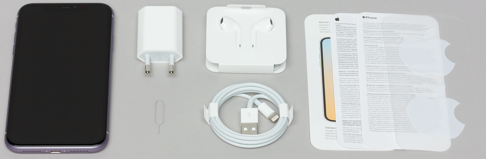

iPhone 11

Характеристики
- SoC Apple A13 Bionic (6 ядер: 2 высокопроизводительных + 4 энергоэффективных) + система Neural Engine третьего поколения
- Операционная система iOS 13
- Сопроцессор движения Apple M13, включающий барометр, акселерометр, гироскоп и компас
- Сенсорный дисплей 6,1″, IPS, 1792×828, 326 ppi, емкостной, мультитач, с функцией обратной связи Taptic Engine
- RAM 3,75 ГБ
- Флэш-память 64/128/256 ГБ
- Поддержка карт памяти отсутствует
- Сотовая связь: UMTS/HSPA/HSPA+/DC-HSDPA (850, 900, 1700/2100, 1900, 2100 МГц); GSM/EDGE (850, 900, 1800, 1900 МГц), LTE Bands 1, 2, 3, 4, 5, 7, 8, 12, 13, 17, 18, 19, 20, 25, 26, 27, 28, 29, 30, 38, 39, 40, 41, поддержка Gigabit LTE
- Wi-Fi 802.11b/g/n/ac/ac (2,4 и 5 ГГц; поддержка MIMO)
- Bluetooth 5.0, A2DP, LE
- NFC (только для Apple Pay)
- GPS c A-GPS, Глонасс, Galileo и QZSS
- Универсальный разъем Lightning
- Камеры: фронтальная (12 Мп, видео 4К 30 к/с, 720р 240 к/с) и тыльная с двумя объективами (широкоугольный и сверхширокоугольный; оба — 12 Мп, съемка видео 4К 60 к/с)
- Распознавание лица с помощью камеры TrueDepth
- Литий-полимерный аккумулятор 3110 мА·ч, несъемный
- Поддержка беспроводной зарядки стандарта Qi
- Литий-полимерный аккумулятор 2716 мА·ч, несъемный
- Габариты 151×76×8,3 мм
- Масса 194 г
- Защита IP68
Комплектация

- Смартфон
- Блок зарядки
- Провод для зарядки
- Наушникки
- Документация